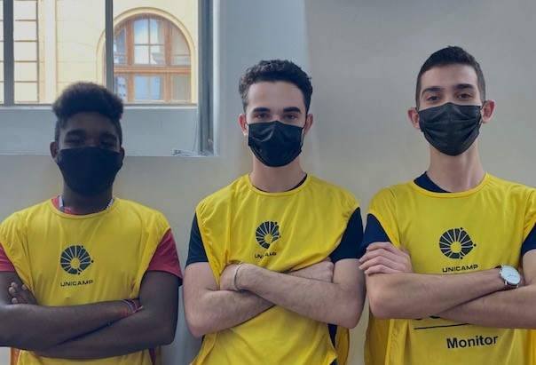

Já pensou em virar um monitor?
Você já teve o sonho de dar aula, ajudar os outros, e ainda ser remunerado com isso? No cotuca você pode! Basta fazer parte da monitoria, lá você é contratado pela escola a auxiliar seus colegas.
Os monitores são alunos do próprio Cotuca. Os candidatos a monitores são selecionados por meio de provas e entrevistas, bem como por seu desempenho acadêmico. Eles cumprem uma carga horária de 12 horas semanais, durante as quais auxiliam os professores na solução de dúvidas dos alunos com dificuldades no aprendizado e também realizam tarefas de apoio aos professores, na preparação de aulas, material didático e laboratórios. Suas atividades são remuneradas, atualmente o salário é cerca de R$ 600,00 por mês.
